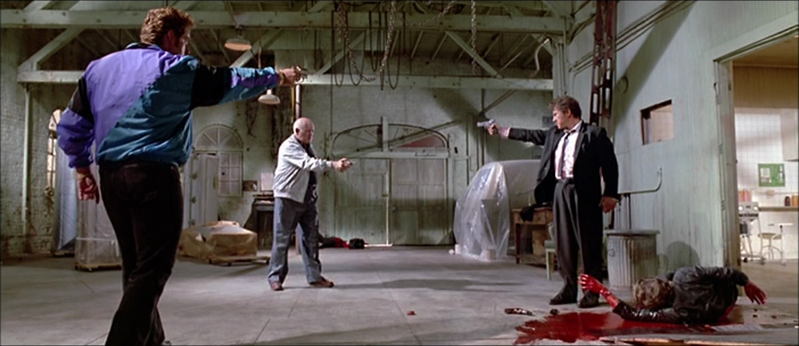
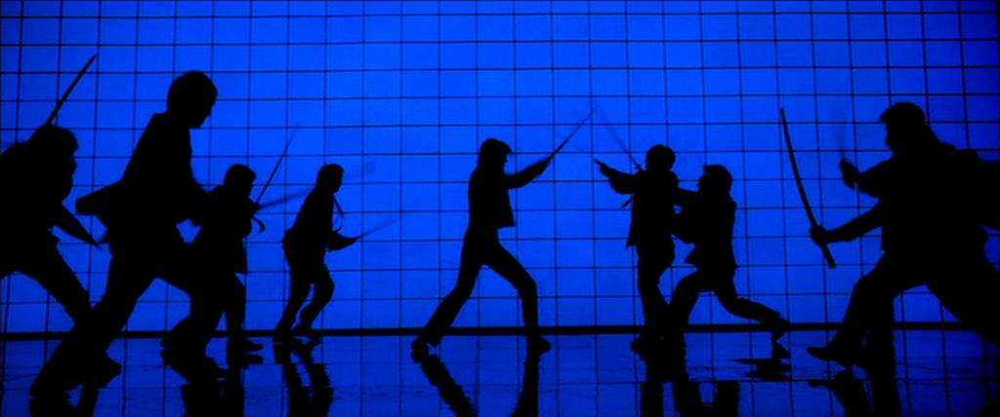
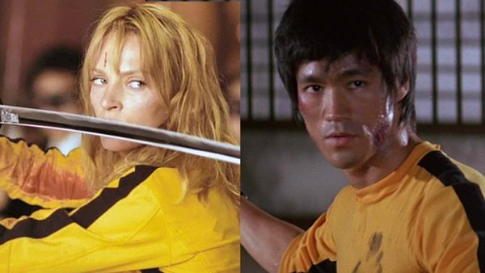

Estética Tarantino

O Duelo Impossível
Três ou mais personagens apontando armas entre si em um impasse mortal. É o momento em que o diálogo para e o destino de todos fica por um fio, criando uma tensão insuportável que se tornou a marca registrada de seus clímax.

Diálogos e Cultura Pop
Antes do caos, o mundano. Seus personagens discutem sobre hambúrgueres, músicas antigas e fatos triviais. Esses diálogos humanizam assassinos e criam uma conexão única com o público através da cultura pop.

Violência Estilizada
A violência aqui não é realista, é um espetáculo visual. Inspirado em filmes de artes marciais e faroestes, o sangue jorra de forma exagerada e coreografada, transformando cenas brutais em verdadeiros balés cinematográficos.

A Câmera Divina
A visão de cima, em um ângulo de 90 graus, que revela a simetria perfeita da cena. Esse enquadramento "voyeurístico" destaca o isolamento dos personagens e transforma o cenário em uma peça geométrica de design.

Referências
Tarantino é o mestre da homenagem. Cada filme é uma colagem de referências a gêneros esquecidos, desde o Kung-fu dos anos 70 até o Western Spaghetti. Ele não apenas copia; ele reimagina e celebra a história da sétima arte.